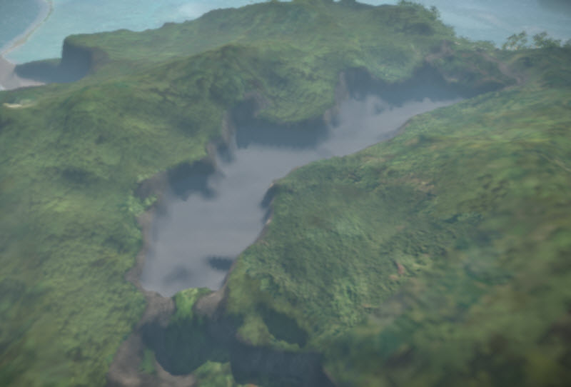
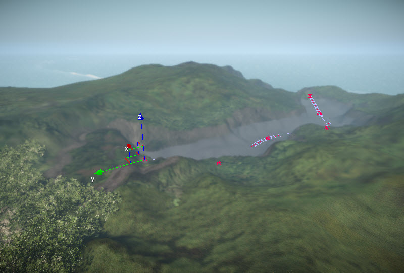
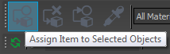
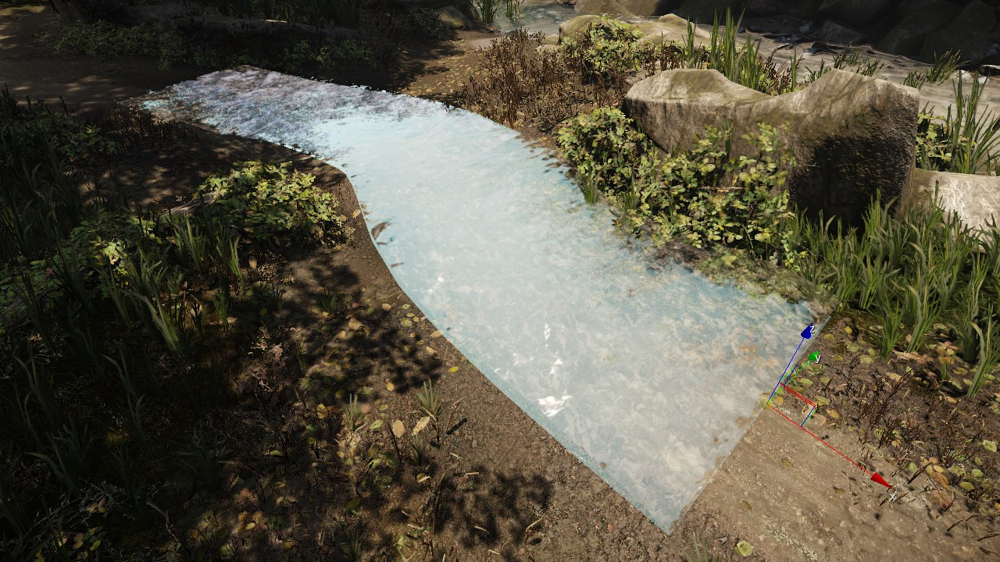
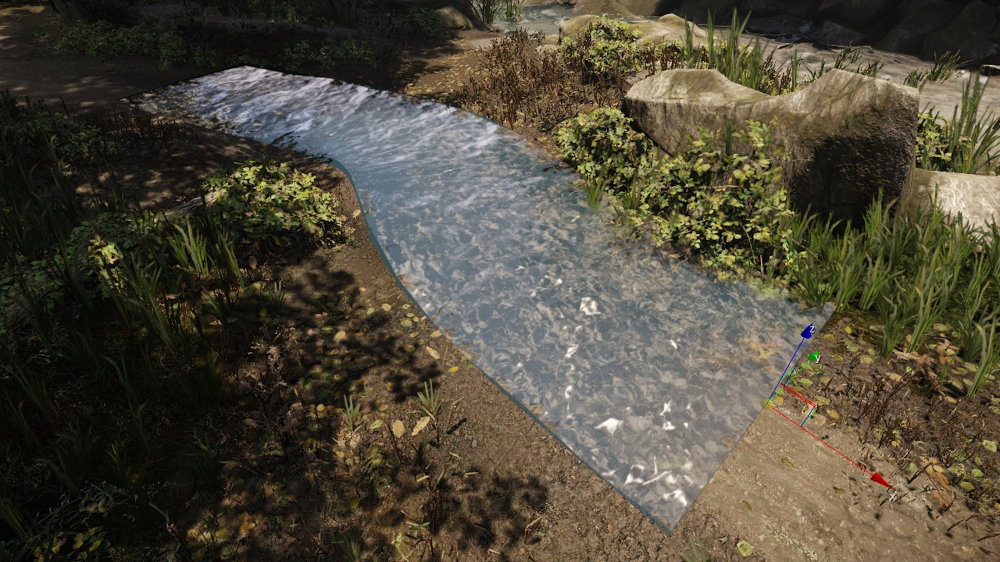
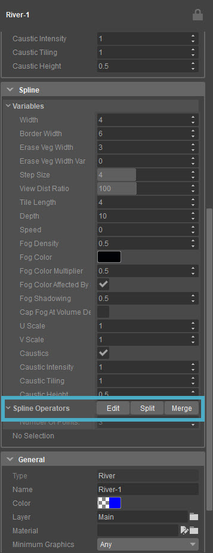
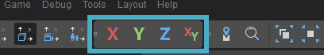
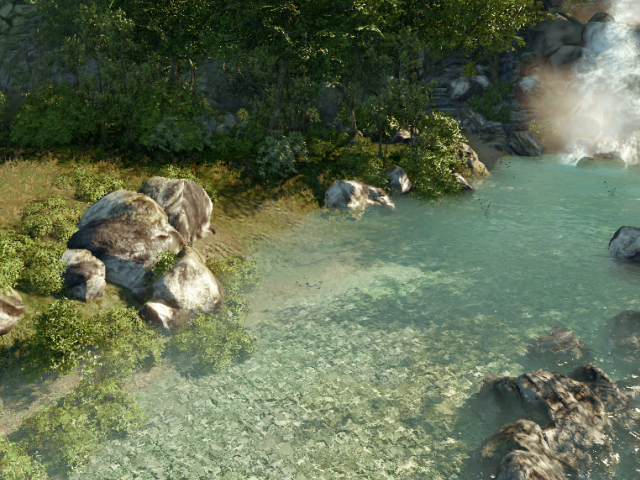

Preparing the Terrain
In order to create a realistic looking terrain, it is important to first prepare the surrounding terrain for the river. To create a realistic river bed, make sure that the walls of the river are above the starting point of the river for the entire length of the river. Also, paint the bottom of the river a different texture than the surrounding area, particularly if the water will have translucent properties.

River terrain prepared
Placing a River Entity
On the Create Objects tab, select Misc → River. As with all of the tools in the Misc category, click to activate it.
Continue clicking to place a series of points that will make up the river. The more points that are placed, the greater the degree of control over the general direction and curvature of the river.
Remember that the wider the river is, the farther apart the points should be to avoid clipping at sharp corners.

River spline added
Don't worry about parts of the river disappearing into the terrain; these can be adjusted later.
Assigning a Material
With the river entity selected, go to the Properties panel and click the button next to the Material field.
Now select a material or create a new material using the Material Editor.
Make sure to select a material that uses the Watervolume Shader when applying a material to a river.
Also, pay attention in the Material Editor to the Shader Params and Shader Generation Params settings. With these, the way the river looks can be adjusted.
When finished selecting the material and making any adjustments, press the Assign Item to Selected Objects button to assign the material to the river.

Assign item
Now you can inspect the river and see how the assigned material looks in the level.

Inspecting river
By default the river color will probably be too bright; try lowering the color:

River color lowered
Editing Single Points
Editing single points in a river works exactly the same as editing points within a road and both objects have a number of similar options.
Click Edit in the Spline Parameters section:

Edit button
You will now be able to control every key point on the river. You can change the X, Y, or Z positions separately, X and Y together, or move the key point on top of the terrain. For this, choose one of the axis lock modes in the task bar.

Axis Constraints
When the Edit mode from above if active, It is also possible to snap the individual points to the terrain the same way as with objects: by clicking Ctrl + Shift + LMB on any point on the terrain.
Unchecking Default Width will allow you to type in a specific width for the river at that point you've selected.
Results
Once you have everything set up, the river should flow gently. To enhance the look of the river, the ground material needs to be painted with an appropriate texture and some vegetation can be added.
